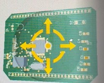

Optimization of PV Tilt Angle for Shahrekord Using PVsyst Data and ODE-Based Numerical Methods in Python
(2025)

In this project, I developed a computational framework to determine the optimal tilt angle of photovoltaic (PV)
panels for the city of Shahrekord, with the objective of maximizing the annual energy yield of a fixed-tilt,
south-facing PV system. PVsyst is used strictly as a provider of high-quality irradiance and meteorological
data for Shahrekord, while all modeling, ODE-based time marching and tilt optimization are carried out
independently in Python.
Data acquisition (PVsyst as the climate and irradiance source)
A base PV system was configured in PVsyst for Shahrekord, including the geographic coordinates, a corresponding
meteorological file, and a fixed-tilt, south-facing PV array (e.g. 50 kWp) with fixed module, inverter and system-loss
assumptions. From this setup, I exported time-series data (typically as CSV), including:
- Global Horizontal Irradiance (GHI)
- Diffuse and, where available, direct beam irradiance
- Ambient temperature and other relevant meteorological variables
These data serve as the environmental input for the independent solar geometry and PV performance model implemented in Python.
Solar geometry and tilted-plane irradiance (ODE-like time-marching model)
Using classical solar geometry relations, I modeled solar declination, hour angle, zenith angle and solar azimuth
as functions of time (day and hour of the year). For a given tilt angle $\\beta$, the incidence angle on the PV plane
is computed and used to derive the effective irradiance on the tilted surface $G_T(\beta, t)$.
These relationships are implemented as an ODE-like, time-marching model over a full year: for each time step
(hourly or sub-hourly), the code combines PVsyst irradiance data with solar geometry equations to calculate the
instantaneous PV power output $P(\beta, t)$ as a function of tilt, time and operating conditions.
Annual energy objective function and numerical optimization
The core quantity of interest is the annual energy yield of the system as a function of tilt angle,
defined as
\[
E_{\text{year}}(\beta) = \int_{\text{year}} P(\beta, t)\, dt
\]
In practice, this integral is implemented as a numerical sum over all time steps of the year, so that,
for any given $\beta$, the model returns a scalar value $E_{\text{year}}(\\beta)$ in kWh/year.
The instantaneous power model can use either a simple constant-efficiency approximation or
a more detailed efficiency function depending on irradiance and cell temperature.
The tilt optimization problem is then formulated as a one-dimensional maximization:
\[
\max_{\beta \in [\beta_{\min}, \beta_{\max}]} E_{\text{year}}(\beta).
\]
In Python, I solve this by minimizing the negative annual energy, $-E_{\text{year}}(\\beta)$, using SciPy’s
scalar optimization routines (e.g. minimize_scalar) over a prescribed search interval (e.g. 0°–60°).
For multi-parameter extensions (such as joint optimization of tilt and azimuth), global optimizers like
differential_evolution can also be employed.
Results, validation and extensions
The resulting framework produces the “annual energy vs. tilt angle” curve for Shahrekord and identifies the
optimal fixed tilt angle that maximizes yearly energy yield.
CFD Analysis of Hydrodynamic Forces on a Circular Cylinder in Water (2025)
In this project, I performed a detailed computational fluid dynamics (CFD) analysis of the flow around a circular cylinder submerged in water, with the objective of quantifying the hydrodynamic loads acting on the structure. The focus was on accurately predicting the drag and lift forces and computing the corresponding non-dimensional drag coefficient (Cd) under different flow regimes.
The study was based on the numerical solution of the incompressible Navier–Stokes equations for external flow around a bluff body. A two-dimensional computational domain containing a circular cylinder was created, and a mesh was generated with local refinement near the cylinder wall to resolve the boundary layer and flow separation region. Appropriate boundary conditions were applied, including a uniform inflow velocity profile, a pressure outlet, and a no-slip condition on the cylinder surface.
Simulations were carried out for a range of Reynolds numbers to capture laminar, transitional, and turbulent flow regimes. Depending on the regime, either a laminar flow model or a suitable turbulence model was employed. For each case, the pressure and viscous shear stress distributions along the cylinder surface were obtained, from which the instantaneous and time-averaged drag and lift forces were computed. These forces were then used to calculate the drag coefficient and compare its behavior across different regimes.
The results provided insight into key flow phenomena such as flow separation, wake formation, and vortex shedding, and showed how the magnitude and temporal behavior of drag, lift, and Cd evolve as the flow transitions from laminar to turbulent.
üîó View on GitHub
Simulation of DC Electrical Faults in PV Systems Using MATLAB/Simulink for Data Generation under Normal and Fault Conditions (2024)

In this project, I developed a detailed MATLAB/Simulink model of the DC side of a photovoltaic (PV) system in order to simulate electrical faults and systematically generate data under both normal and faulty operating conditions. The main goal is to reproduce realistic voltage and current waveforms for different DC fault scenarios and to structure these signals into a labeled dataset that can be used to design and evaluate fault detection and diagnosis algorithms for PV systems.
The simulated system includes a PV array, a DC–DC converter and a DC load (or DC-link interface), modeled in Simulink to capture the dynamic behavior of the circuit. The PV array is represented by an electrical equivalent model (e.g., single-diode or Simscape PV block), so that changes in irradiance, temperature and fault parameters are reflected in the terminal voltage–current characteristics. The converter and load are modeled with appropriate control and measurement blocks to monitor the impact of faults on the overall system.
DC faults are injected on the PV side and along the DC link, including open-circuit faults, line-to-line short circuits and gradual degradation of PV modules or strings. For each scenario, the transient and steady-state responses of the system are analyzed, with emphasis on how the fault modifies the shape and amplitude of DC voltage and current waveforms at different measurement points.
During each simulation run, key signals are logged in Simulink and exported for offline processing. Normal-operation cases and each specific fault type are labeled and organized into a structured dataset. This dataset is intended to serve as training and test data for data-driven or hybrid fault detection models (for example, machine learning or signal-processing-based classifiers) that can distinguish between healthy and faulty operation in PV systems based on DC-side measurements.
üîó View on GitHub
Deep Neural Network–Based Parameter Estimation of PV One-Diode Models from I–V Curve Key Points
(2024)
In this project, I designed a deep neural-network framework to estimate the physical parameters of the
one-diode photovoltaic (PV) model directly from a small set of key points extracted from the I–V curve.
The target parameters are the series resistance $R_s$, shunt resistance $R_{sh}$, light-generated current
$I_L$, diode reverse saturation current $I_s$, and diode ideality factor $A$, which completely define the
single-diode equation of a PV module.
Accurate estimation of these parameters is essential for PV module modelling, performance prediction under
varying operating conditions, and degradation or fault analysis. Classical approaches either rely on analytical
formulas using a few key points, or on iterative numerical optimization using the full I–V curve. Analytical
methods are fast but sensitive to measurement noise and constrained by the location of the sampled points,
while numerical methods are computationally expensive and require good initial guesses. In this work, I treat
parameter extraction as a supervised regression problem and use a deep neural network to learn the mapping from
compact I–V features to the underlying model parameters.
Methodology
The starting point is the standard one-diode PV model:
\[
I = I_L - I_s\left[\exp\!\left(\frac{V + I R_s}{A V_T}\right) - 1\right]
- \frac{V + I R_s}{R_{sh}},
\]
where $V_T$ is the thermal voltage and $R_s$, $R_{sh}$, $I_L$, $I_s$, and $A$ are the unknown parameters to be
estimated. Instead of feeding the entire measured I–V curve to the model, I extract a compact set of key points
and local slopes, for example:
- Samples in the short-circuit region near $(V \approx 0,\, I \approx I_{sc})$
- Intermediate points around the knee of the I–V curve
- Samples in the open-circuit region with $I \approx 0$
- Local slopes $dI/dV$ at selected points along the curve
These key points and derivatives form the input feature vector to the neural network and play a similar role
to the analytical features used in classical parameter-extraction formulas.
Dataset generation and network training
To train the network, I generated a large synthetic dataset by sampling physically plausible values of
$(R_s, R_{sh}, I_L, I_s, A)$ within predefined ranges, computing the corresponding I–V curves from the
one-diode model under different irradiance and temperature conditions, and extracting the same key-point
features from each curve. Each feature vector is paired with its “ground-truth” parameter vector, resulting
in a labeled dataset suitable for deep regression.
I then implemented a fully connected deep neural network (multi-layer perceptron) that takes the key-point
feature vector as input and outputs the five model parameters. The network is trained using mean-squared error
loss, with normalization and regularization (e.g. early stopping / dropout) to achieve good generalization
across operating conditions.
Evaluation and applications
After training, the estimated parameters
$(\hat{R}_s, \hat{R}_{sh}, \hat{I}_L, \hat{I}_s, \hat{A})$
are validated by reconstructing the I–V curves and comparing them with the original curves used to generate
the data. Performance is evaluated using metrics such as RMSE between true and reconstructed currents along
the I–V curve, demonstrating that the DNN can approximate the inverse mapping from key I–V points to model
parameters with high accuracy.
The proposed approach provides a fast, non-iterative way to estimate PV model parameters from a limited number
of I–V samples, making it suitable for online monitoring. The estimated parameters can be used for tracking
PV module degradation, fault detection (e.g. changes in $R_s$ or $R_{sh}$ due to aging or hot spots), and
improved PV system simulation and control.
My role in this project:
- Formulated PV parameter estimation as a deep-learning regression problem based on the one-diode model.
- Designed key-point feature extraction from I–V curves and implemented synthetic dataset generation over a wide range of operating conditions.
- Built, trained and evaluated deep neural networks to estimate $(R_s, R_{sh}, I_L, I_s, A)$ from the key-point features.
- Validated the method by reconstructing I–V curves from the estimated parameters and analyzing error metrics across different scenarios.
Tools & technologies:
Python, deep learning framework (TensorFlow / PyTorch), NumPy, SciPy, Matplotlib; PV one-diode modelling; data preprocessing and regression evaluation.
Developing Regression Methods for Estimating the Elastic Modulus of Rock Using Machine Learning (2024)
This project aims to develop and evaluate advanced regression models to estimate the elastic modulus of rock, an essential parameter in geotechnical engineering, mining, and construction. The models are built using machine learning algorithms including Deep Neural Networks (DNN), XGBoost, and AdaBoost. All implementations are done using Python, utilizing libraries such as Scikit-learn, XGBoost, TensorFlow/Keras, Pandas, and Matplotlib.
The input data includes physical and mechanical properties of rock samples—such as density, porosity, uniaxial compressive strength, and mineral composition. After preprocessing the dataset, the models are trained and evaluated using metrics like Mean Squared Error (MSE), Mean Absolute Error (MAE), and R-squared (R²). Techniques such as hyperparameter tuning and cross-validation are used to improve model performance and prevent overfitting.
The final outcome includes accurate machine learning models for predicting elastic modulus, analysis of feature importance, and a clean, modular Python codebase suitable for future research or real-world engineering applications.
üîó View on GitHub
Simulation and Optimization of National-Scale Energy Systems in EnergyPLAN: A Multi-Scenario Study on Efficiency, Emissions, and Flexibility (2024)

As part of my training in advanced energy systems modeling, I completed EnergyPLAN Exercise 2, which involved step-by-step analysis and optimization of a national-scale energy system. The exercise built upon a predefined baseline scenario and included a series of improvements aimed at reducing energy consumption and CO₂ emissions while enhancing system efficiency and flexibility. First, I implemented energy conservation measures in the residential heating sector by reducing space heating demand by 50% for both district heating and individual house heating. This required recalculating demand profiles and applying new hourly distribution files. The effects of these measures were analyzed in terms of changes in peak heat demand, total primary energy consumption, and resulting CO₂ emissions. Next, I replaced conventional district heating boilers with a mix of small-scale and large-scale Combined Heat and Power (CHP) plants, fueled by natural gas and coal respectively. Industrial waste heat recovery was integrated into the system, along with the addition of backup boiler capacity and thermal storage. This configuration allowed for improved fuel efficiency and reduced reliance on standalone heating technologies. Following that, I simulated the integration of 3000 MW offshore wind power using real hourly wind data. This scenario introduced potential excess electricity production, especially during low-demand periods. I explored two regulation strategies for CHP plants—operating based solely on heat demand and operating based on both heat and electricity demands—to understand the implications for system balancing, primary energy supply, and emissions. Subsequently, I modeled a 30% reduction in national electricity demand, bringing it down from 49 TWh/year to 34.3 TWh/year. Again, both CHP regulation strategies were assessed to measure their impact on energy efficiency, excess electricity production, and emission levels under reduced consumption conditions. Finally, I added a 300 MW heat pump with a coefficient of performance (COP) of 3 and increased thermal storage by 40 GWh. This allowed for greater operational flexibility of CHP units and more efficient use of renewable electricity, especially during periods of high wind generation. Through this exercise, I gained valuable hands-on experience in energy system optimization, scenario-based planning, and sustainable infrastructure design using the EnergyPLAN model. The analyses demonstrated how integrated policy and technology interventions can significantly improve the sustainability and resilience of national energy systems.
üîó View on GitHub
Application of the simplex method to reduce the peak demand and cost of household consumers (2022)
In a separate research project, I applied the Simplex optimization method to minimize peak electricity demand and reduce overall energy costs for residential consumers. This study focused on shifting household load profiles using linear programming while ensuring user comfort and operational constraints. The optimization was implemented in MATLAB, which provided robust tools for modeling, simulation, and data analysis. The results demonstrated how intelligent scheduling of appliances can significantly improve energy efficiency and reduce costs, supporting demand-side management initiatives.
üîó View on GitHub
Examining two proposals to reduce electricity consumption in an office building during peak hours (2022)

Another project addressed load management strategies in office buildings in Tehran, where frequent summer power outages are common. The first strategy employed load shifting through MATLAB-based energy management, successfully reducing peak demand while preserving occupant comfort. The second explored the feasibility of installing a rooftop solar power system; however, due to high energy consumption and low electricity tariffs, this option was found to be economically unjustifiable.
üîó View on GitHub
Entropy analysis and exergy calculation of all flows in a power plant cycle (2021)

As part of my coursework in "Optimization of Exergy Flow," I conducted a comprehensive entropy and exergy analysis of a power plant thermodynamic cycle. This project involved modeling each component—turbines, compressors, heat exchangers, pumps—using both MATLAB and Python. I utilized custom scripts and libraries, such as CoolProp in Python, to compute entropy generation, exergy destruction, and second-law efficiencies. This comparative approach provided valuable insights into software capabilities for thermodynamic analysis and highlighted areas for potential efficiency improvements within the cycle.
üîó View on GitHub
Simulation of soft switched non-isolated high step-down converter with PSpice software (2021)

Testing electronic circuits in practice is time-consuming, expensive and tedious. Hence, computer simulation software was designed to simulate circuits. In fact, simulation fills the gap between theoretical analysis of the circuit and its practical construction. One of the most famous software in this field is PSpice software, which is very suitable for simulating circuits at intermediate frequencies. Using its features, this software performs simulations in a way that has a slight difference from reality and in case of practical implementation, you will get the same answer as the simulation. A non-isolated high step-down DC-DC converter with ultra-high step down conversion ratio is simulated. Advantages of proposed converter can be summarized as: high step down ratio, extended duty cycle, reduced switching losses by converter operation under ZVS conditions, reduced reverse recovery losses of diodes by achieved ZCS turn off condition, and reduced voltage spikes by inherent active clamping structure of the converter.
üîó View on GitHub
Comprehensive Electrical and Mechanical Design of a 230 kV Transmission Line with MATLAB Simulation (2021)

As part of a comprehensive power systems engineering project, I participated in the electrical and mechanical design of a 230 kV high-voltage transmission line, supported by simulation and analysis in MATLAB. The goal of the project was to design a reliable and efficient overhead transmission line by addressing both electrical performance and mechanical feasibility under realistic operating conditions. The electrical design began with the selection of a suitable conductor based on critical parameters such as current-carrying capacity, voltage drop, power losses, short-circuit withstand rating, and corona discharge characteristics. A compatible shield wire (ground wire) was then chosen to protect the line from lightning-induced overvoltages. We conducted a detailed insulation coordination analysis to account for various transient overvoltages arising from lightning strikes, switching operations, power frequency events, and pollution. Based on these evaluations, we determined the required number of insulator discs and air clearance distances necessary to ensure system safety and reliability under extreme conditions. The mechanical design included the development of loading tables and the calculation of tension and sag for the transmission conductors. We identified appropriate mechanical loading conditions (e.g., wind, ice, and temperature variations), selected suitable design spans, and performed tower placement planning to ensure structural integrity across different terrain types. By combining theoretical modeling with MATLAB-based simulations, the project provided a practical and in-depth understanding of the interdisciplinary challenges involved in modern high-voltage transmission line design.
üîó View on GitHub
Optimum design of a 100 KW photovoltaic power plant connected to the grid in Tehran using PVsyst software (2020)

In the proposed method, after selecting the module and inverter model, the optimal design of the photovoltaic power plant is carried out by considering parameters such as the reliability factor, cost, optimal land use, and increased energy output. This is done within the maximum operating range of the system using the PVsyst software. In this software, the arrangement of the photovoltaic modules in connection and the number of strings are determined. Subsequently, output characteristics, shading, and losses are extracted and analyzed using the PVsyst software.
üîó View on GitHub
Load Flow Project Between Buses in Power Systems Using MATPOWER tool in MATLAB Software (2020)

In this project, load flow analysis between buses in a sample power system was performed using the MATPOWER tool in MATLAB. The goal of this analysis was to evaluate voltage profiles, real and reactive power flows, and line losses to assess system performance and identify critical points in the network. The system model includes 5 buses, consisting of one slack bus, two PV (generator) buses, and two PQ (load) buses. Loads and generators were defined based on realistic data. After setting up the network structure and parameters using MATPOWER’s case format, the power flow was executed using the runpf function. The output included voltage magnitudes and angles at each bus, generated and consumed power, line power flows, and system losses. The results revealed that some transmission lines were operating near their maximum capacity and certain buses experienced minor voltage drops, which could be mitigated by adding compensation devices or optimizing the network layout. This project demonstrates MATPOWER’s capability to accurately and efficiently analyze power systems and identify areas for improvement and expansion.
üîó View on GitHub
Programming and making obstacle avoiding robot using Arduino and Ultrasonic sensor (2020)

The robot moves forward and stops when it detects an obstacle within a predefined distance. After stopping, it can be navigated in different directions based on user input. The project uses an Arduino board and a motor driver, which allows connection of two DC motors. The driver includes the following pins: IN1 and IN2, which control the clockwise and counterclockwise rotation of motor one, and IN3 and IN4 for motor two. Additionally, it has two pins labeled ENA and ENB, which are used to enable and control the motors. These pins are connected to the digital pins on the Arduino, while ENA and ENB are connected to the PWM pins to manage motor speed and activation. Another component used is the SRF04 ultrasonic sensor, which includes two pins: TRIG and ECHO. These are also connected to the Arduino’s digital pins. This sensor operates using sound waves to measure distance: a pulse is sent from the TRIG pin, and when it hits an object, it reflects back and is received by the ECHO pin. Based on the time it takes for the signal to return, the distance between the sensor and the object can be calculated using a standard formula. The joystick module is another key component, which includes two axes (X and Y) and four directional controls that allow the robot to move in different directions. The module has two output pins: VRX and VRY, corresponding to the X and Y axes, which should be connected to two of Arduino’s analog pins. Before moving the joystick, the analog voltage values of the X and Y axes can be monitored through the serial monitor. When the joystick is moved, these values change between 0 and 1023. Based on these values and their relative positions, the direction of the robot’s movement can be determined. The drive system consists of two 12V DC motors with a nominal speed of 200 RPM, providing sufficient torque and speed for smooth navigation.
üîó View on GitHub
Designing a LPC2138 electronic board using Altium designer software (2020)

In this project, a two-layer electronic development board based on the LPC2138 microcontroller was designed using Altium Designer software. The LPC2138, part of NXP’s ARM7TDMI-S family, offers high performance with low power consumption, making it well-suited for embedded system applications. The design process began with schematic capture, incorporating essential components such as the microcontroller, voltage regulators, crystal oscillators, reset circuitry, and interface headers including UART, SPI, and I2C. A compact two-layer PCB layout was then created with careful attention to signal integrity, power distribution, and component placement for efficient performance and manufacturability. Routing was optimized across both layers, with decoupling capacitors strategically placed near power pins to maintain voltage stability. The board features standard programming and debugging interfaces, such as a JTAG header, enabling easy firmware uploading and system testing. 2D and 3D previews of the board were generated within Altium Designer to validate mechanical fit, clearance, and layout accuracy. This project showcases a complete design workflow from schematic to final two-layer PCB, resulting in a functional, reliable LPC2138-based board ready for embedded development and prototyping.